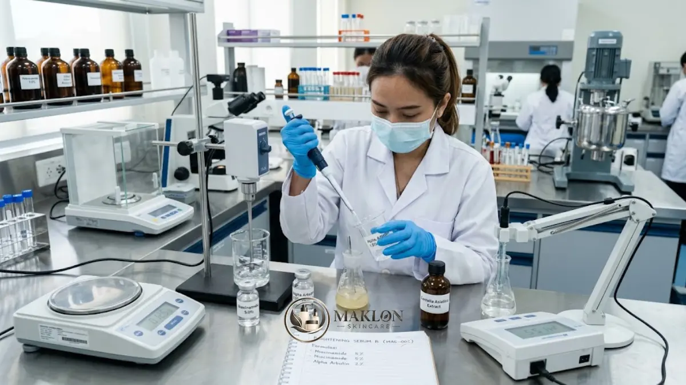
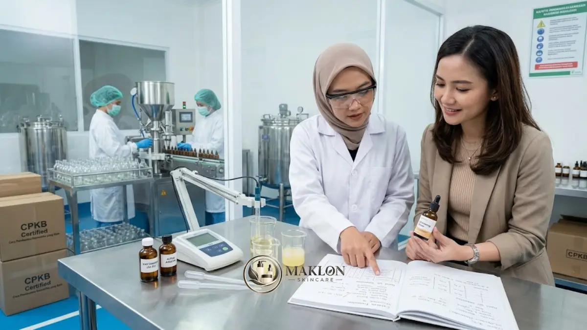

Formula serum brightening yang baik menggabungkan bahan aktif pada konsentrasi yang tepat (misalnya Niacinamide 2–10% dan Alpha Arbutin 1–2%), pH yang stabil dan nyaman di kulit, bahan penenang, serta pengujian stabilitas dan keamanan sebelum produksi massal dan notifikasi BPOM.
- Pemilihan hero ingredients yang tepat dan dosis sesuai ambang batas aman SCCS dan BPOM.
- Penguncian derajat keasaman (pH) formula pada rentang stabil 5,0 hingga 6,0.
- Pelaksanaan protokol uji stabilitas sediaan laboratorium dan uji tempel (patch test) sebelum komersialisasi.
Meracik sediaan kosmetik perawatan wajah bukan sekadar perkara mengikuti bahan yang tengah viral di media sosial.
Formula yang bermutu tinggi harus terbukti efektif memberikan hasil, memiliki stabilitas kimiawi yang kuat sepanjang masa simpan, serta mematuhi seluruh koridor regulasi BPOM di Indonesia.
Panduan ini merangkum poin-poin krusial yang wajib Anda bahas bersama tim formulator saat merancang sediaan serum pencerah melalui jasa maklon skincare profesional.
1. Pilih Hero Ingredients yang Tepat
Bahan aktif pahlawan (hero ingredients) menentukan identitas utama serta arah klaim manfaat dari produk serum yang Anda pasarkan.
Dua bahan aktif yang paling populer dan memiliki profil data klinis terpercaya untuk kategori pencerah kulit:
- Niacinamide (Vitamin B3): Rentang konsentrasi umum berkisar antara 2% hingga 10%. Untuk konsumen pasar massal atau tipe kulit sensitif, kadar 5% sering dijadikan titik awal optimal karena efektif mengurangi hiperpigmentasi dengan menekan transfer melanosom ke lapisan luar kulit.
- Alpha Arbutin: Umumnya diformulasikan pada konsentrasi 1% hingga 2% untuk produk wajah. Badan ilmiah SCCS Uni Eropa menilai Alpha Arbutin aman hingga 2% pada krim dan serum wajah, serta 0,5% pada losion tubuh. Pastikan pihak pabrik mematuhi batasan resmi BPOM.
Hindari godaan menaikkan dosis konsentrasi secara berlebihan hanya demi membuat klaim promosi "paling ampuh".
Konsentrasi yang terlalu tinggi tidak otomatis melipatgandakan khasiat klinis, melainkan justru memperbesar potensi timbulnya iritasi dan rasa perih di kulit pengguna.
2. Atur pH Formula
Derajat keasaman (pH) formula adalah faktor penentu utama bagi stabilitas bahan aktif dan kenyamanan saat sediaan diaplikasikan pada kulit wajah.
Secara fisiologis, permukaan kulit sehat manusia bersifat asam alami. Tinjauan ilmiah Lambers dkk. (2006) menyimpulkan bahwa rata-rata pH permukaan kulit normal berada di bawah angka 5,0.
Oleh sebab itu, formulator di laboratorium pabrik maklon skincare OEM biasanya mencari titik ekuilibrium antara kestabilan bahan aktif dan kenyamanan kulit.
Untuk kombinasi Niacinamide dan Alpha Arbutin, rentang pH ideal umumnya dikunci pada angka 5,0 hingga 6,0. Angka akhir ini ditetapkan berdasarkan evaluasi uji stabilitas sediaan.
Tips Praktis: Mintalah pihak pabrik maklon mencatat pH awal saat produksi serta pergeseran pH setelah masa uji simpan. Pergeseran pH yang terlalu drastis menandakan sistem penyangga (buffer) formula kurang stabil.
3. Kurangi Potensi Pemicu Iritasi
Kenyamanan saat pemakaian perdana adalah kunci utama untuk mendorong pembelian berulang (repeat order) dari para pelanggan Anda.
Pertimbangkan formulasi bebas alkohol denat (alcohol denat.) dan batasi penggunaan pewangi sintetis berlebih, terutama jika produk Anda ditargetkan bagi konsumen berkulit sensitif.
Tambahkan bahan penenang berkualitas tinggi seperti ekstrak Centella asiatica, allantoin, atau ekstrak chamomile untuk menyeimbangkan aksi bahan aktif pencerah.
Pastikan seluruh bahan baku yang digunakan tercantum legal dalam ketentuan regulasi kosmetik nasional. Pasal 5 Peraturan BPOM No. 25 Tahun 2025 secara tegas melarang pelaku usaha memakai bahan berbahaya terlarang seperti hidrokuinon murni dalam kosmetik yang beredar bebas.

4. Pahami Perbedaan Uji Stabilitas dan Patch Test
Dalam proses pembuatan produk kosmetik, kedua jenis pengujian ini sering kali disalahpahami atau tertukar oleh para pemilik brand pemula:
| Jenis Pengujian | Tujuan Utama | Parameter yang Diperiksa |
|---|---|---|
| Uji Stabilitas (Stability Test) | Memastikan sediaan fisik dan kimiawi produk tetap prima selama masa penyimpanan | Perubahan warna cairan, aroma, pergeseran pH, viskositas, pemisahan fase, dan batas cemaran mikroba pada suhu berjenjang |
| Patch Test (Uji Tempel Kulit) | Menilai potensi timbulnya iritasi primer maupun reaksi hipersensitivitas alergi pada kulit | Respons klinis kulit panelis sukarelawan pada area uji tertutup setelah diolesi sediaan produk selama durasi waktu tertentu |
Mintalah protokol pengujian dan laporan sertifikat hasil kedua uji laboratorium tersebut secara tertulis kepada mitra pabrik maklon Anda sebelum menyetujui tahap produksi skala besar.
5. Checklist Sebelum Produksi Massal
Sebelum memberikan persetujuan akhir (final sign-off) pada lini manufaktur, pastikan kelima aspek fundamental berikut telah terpenuhi:
- Sertifikat CPKB pabrik: Memastikan pabrik manufaktur memiliki sertifikat CPKB aktif yang sah untuk kategori sediaan cairan.
- Dokumentasi INCI tertulis: Daftar bahan baku lengkap beserta kadar konsentrasi zat aktif telah disepakati secara legal dan tertulis.
- Laporan uji lab lengkap: Lembar hasil uji stabilitas dipercepat dan uji iritasi tempel telah dinyatakan lolos standar mutu.
- Kepatuhan klaim kemasan: Narasi klaim pada botol dan dus luar telah diselaraskan dengan aturan pedoman periklanan kosmetik BPOM.
- Kepastian notifikasi BPOM: Alur tanggung jawab, durasi waktu, serta kelengkapan dokumen pengajuan izin edar telah disepakati secara transparan.
Ingatlah bahwa kosmetik di Indonesia diedarkan melalui mekanisme notifikasi BPOM. Sertifikat CPKB yang valid adalah syarat mutlak untuk memperoleh nomor notifikasi resmi tersebut.
Cara Menyusun Brief Formulasi untuk Pabrik Maklon
Penyusunan brief formulasi yang matang akan menghemat banyak waktu litbang di laboratorium dan memangkas putaran revisi sampel sediaan.
Siapkan poin-poin spesifikasi teknis berikut sebelum Anda mengadakan pertemuan bersama tim riset formulasi custom:
- Profil target pengguna: Tipe jenis kulit, kelompok rentang usia, serta keluhan utama (misalnya hiperpigmentasi atau flek bekas jerawat).
- Klaim manfaat yang dituju: Pernyataan realistis seperti "membantu mencerahkan warna kulit" atau "menyamarkan noda hitam" yang didukung data uji.
- Prioritas bahan aktif & anggaran: Formulator dapat mengombinasikan zat aktif bermutu dengan pagu target biaya pokok produksi per botol Anda.
- Preferensi karakter sensorik: Kekentalan tekstur gel, kecepatan daya serap di kulit, aroma alami, dan transparansi warna cairan sediaan.
- Wadah kemasan primer: Botol kaca dengan pipet penetes, botol airless pump, atau tube, karena wadah kemasan memengaruhi stabilitas bahan aktif yang sensitif terhadap oksidasi.
- Target jadwal peluncuran & MOQ: Menyelaraskan kapasitas antrean fasilitas pabrik dengan kuantitas pesanan awal yang Anda canangkan.
Kesalahan Formulasi yang Sering Terjadi
Berdasarkan pengalaman evaluasi sediaan di lapangan, beberapa kekeliruan umum yang sering merugikan pemilik brand meliputi:
- Memilih zat aktif hanya atas dasar viralitas sesaat tanpa mempertimbangkan keselarasan dengan kondisi kulit konsumen di iklim tropis.
- Mengabaikan pengendalian pH sediaan, sehingga bahan aktif cepat terdegradasi atau memicu sensasi perih menyengat di wajah.
- Menyamakan peran uji stabilitas laboratorium dengan uji tempel patch test pada manusia.
- Tidak mengunci spesifikasi teknis formula dan bahan baku secara tertulis dalam kontrak kerja, sehingga mutu produk berisiko inkonsisten antar batch.
Konsultasikan Formulasi Serum Brightening Anda
Formulasi serum brightening yang unggul menyeimbangkan zat pencerah poten seperti Niacinamide dan Alpha Arbutin dengan pengaturan pH yang presisi, bahan penenang sawar kulit, serta pengujian mutu yang menyeluruh.
Dengan berdiskusi intensif bersama apoteker dan formulator pabrik maklon bersertifikat CPKB, produk serum Anda akan memiliki fondasi keamanan, stabilitas, dan daya terima pasar yang optimal.
Siap menciptakan formula serum pencerah eksklusif untuk brand Anda? Diskusikan brief formulasi Anda bersama tim kami melalui WhatsApp Konsultasi Formulasi Maklon hari ini.